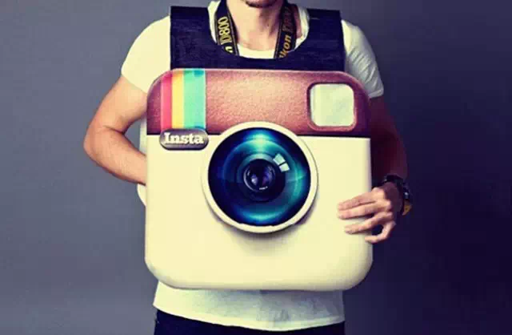

Маски взорвали “Инстаграм” в 2019 году. «Первопроходцы» неплохо на этом поднялись: блогеры нарастили аудиторию, а создатели масок заработали: одни только на дизайне, другие еще и на обучении. В интернете можно найти множество курсов и обучающих видео, предлагающих научить любого пользователя работе в специализированной программе по созданию AR-масок Инстаграм.
В 2020 году маски в Instagram по-прежнему актуальны, но вектор изменится. Важной функцией масок становится продвижение бренда или продукта. С помощью маски можно анонсировать выход нового продукта, привлечь внимание подписчиков и запустить волну пользовательского контента. Появляется возможность встраивать в такие маски игры, геймификации и конкурсные механики.
Сегодня создание AR-маски в Инстаграм предполагает не просто умение пользоваться программой Spark AR Studio, но и разработку рекламной концепции, креатив и продвижение самой маски. А это уже пакет услуг для полноценного бизнеса. Цена разработки AR-маски начинается от 2 тыс. рублей, а верхнюю границу назвать сложно – тут все зависит от сложности заказа. Очевидно, что создание AR-проектов под ключ будет стоить в разы дороже.